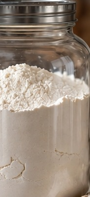

Chapter One
01
Meal-Ready
Dry Mixes &
Pantry Helpers
Dry Mixes &
Pantry Helpers
Thirty-one jars built to carry the whole weeknight — rice, pasta, and skillet bases that only need what’s already in the fridge.
